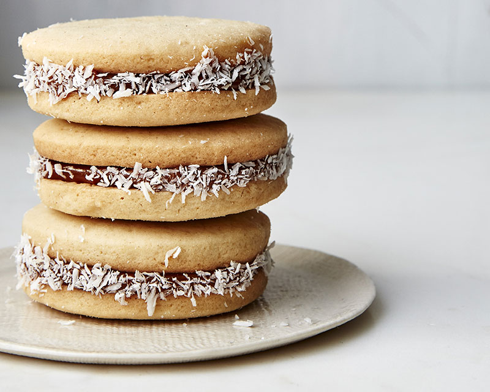

מתכון לאלפחורס
רכיבים
- 180 גרם חמאה רכה
- 1 כוס (120 גרם) אבקת סוכר מנופה
- 1/2 1 כוסות (210 גרם) קמח
- 4 חלמונים
- 1/2 1 כוסות (180 גרם) קורנפלור
- 1 כפית (5 גרם) אבקת אפייה
- 1/2 כוס ריבת חלב או כל ממרח אחר
- 1/4 כוס קוקוס טחון
שלבי ההכנה

- להכנת הבצק: בקערת המיקסר עם וו גיטרה מערבלים את החמאה ואבקת הסוכר עד לקבלת תערובת חלקה ואחידה. מוסיפים את החלמונים ומערבלים עוד כמה דקות.
- לקערה אחרת מנפים את הקמח, הקורנפלור ואבקת האפייה, ומערבבים היטב.
- מוסיפים את תערובת הקמח לקערת המיקסר ומערבלים במהירות נמוכה רק עד להיווצרות בצק אחיד. מתקבל בצק חלק ורך במיוחד
- מחלקים את הבצק ל-2 חלקים ומרדדים כל חלק על גבי נייר אפייה לעלה דק בעובי של פחות מחצי ס"מ. במידת הצורך מקמחים את הבצק במעט קמח.
- קורצים מהבצק עיגולים בקוטר 4 ס"מ ובעזרת מרית מדורגת מעבירים אותם לתבנית אפייה מרופדת בנייר אפייה במרווחים קלים זה מזה. הבצק רך מאוד ולכן חשוב להיעזר במרית או בסכין רחבה להעברת עיגולי הבצק.
- מעבירים את התבנית למקרר לחצי שעה. .
- בזמן זה מחממים את התנור לחום של 175 מעלות.
- אופים את העוגיות 9-10 דקות ועד להזהבה קלה מאוד. מוציאים ומצננים
- מרכיבים: מעבירים את ריבת החלב לשק זילוף ופותחים בו פתח קטן, מעבירים את הקוקוס הטחון לקערית קטנה. מסדרים מחצית מהעוגיות כך שצידן השטוח כלפי מעלה. מזלפים במרכזן 1/2 כפית ריבת חלב. סוגרים עם עוגייה נוספת ולוחצים קלות. בשולי העוגייה, בקו התפר שלה, מזלפים פס דקיק של ריבת חלב. מגלגלים כל עוגייה בקוקוס הקלוי.
העוגיות נשמרות בקופסה אטומה בטמפרטורת החדר עד 4 ימים.
מקור